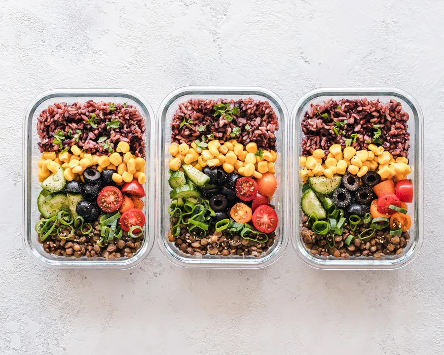
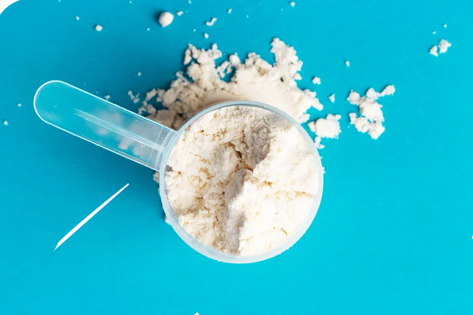

الصحة ليست هدفًا نصل إليه ثم نتوقف، بل طريقة نعيش بها كل يوم.
إعداد المدرّبة ساره
NAVCOACHING.COM
إشعار حفظ الحقوق وإخلاء المسؤولية
جميع حقوق هذا الكتيّب محفوظة للمؤلفة، المدرّبة ساره (Nav Coaching). لا يحق لحامل النسخة المدفوعة نشرها أو نسخها أو مشاركتها مع غيره بأي شكل، ومن يفعل ذلك يعرّض نفسه للمساءلة القانونية.
المعلومات هنا مبنية على مراجع علمية معتمدة وعلى خبرتي العملية، وهي موجّهة للأفراد الأصحاء. لا تغني عن استشارة الطبيب أو أخصائي التغذية المرخّص، خصوصًا في حالات الحمل والرضاعة والأمراض المزمنة، أو عند تناول أدوية، أو قبل البدء بأي مكمّل.
تنبيهلا تتحمّل المدرّبة مسؤولية فهم المحتوى أو تطبيقه بطريقة غير صحيحة. القيم الغذائية للوصفات تقريبية، وتختلف بحسب العلامة التجارية وطريقة الطبخ.
المقدمة
المراجع العربية الموثوقة في التغذية قليلة، وأغلب ما ينتشر على الإنترنت إما معقّد أو غير دقيق. لهذا كتبت هذا الكتيّب: أساسيات التغذية الصحية بلغة واضحة، تكفي المبتدئ ليبني طريقة أكل ثابتة على أسس علمية.
جمعت فيه ما تعلّمته من العمل مع أكثر من 600 مشترك ومشتركة، ومن الدورات والشهادات التي حصلت عليها في التدريب والتغذية الرياضية. ستجد شرحًا للسعرات والبروتين والدهون والكربوهيدرات، وطريقة لحساب احتياجك وتوزيعه، ونصائح لتحضير الأكل مسبقًا، و45 وصفة محسوبة القيم، مقسّمة حسب الوجبة وحسب الهدف.
هدفي أن تفهم ماذا تأكل ولماذا، بحيث تقدر تتصرّف بنفسك سواء كان هدفك خسارة الوزن أو بناء العضل أو المحافظة على صحتك، بدون حرمان وبدون حميات قاسية.
إن كنت من المتدرّبين معيتواصل معي متى احتجت توضيح أي نقطة. أنصحك بقراءة الكتيّب كاملًا، مع أنك ستتعلّم أغلب هذه المعلومات أثناء التطبيق معي. وتذكّر أن بعض ما هنا قد لا يناسب حالتك تمامًا، فخطتك الشخصية موجودة في ملفك التدريبي.
أردت مرجعًا واحدًا يجمع المعلومة العلمية مع التطبيق اليومي: ماذا يحتاج جسمك، وكم، وكيف تحوّل ذلك إلى وجبات حقيقية في مطبخك. ستجد شرحًا مختصرًا لكل مفهوم، ثم خطوات عملية وأمثلة محسوبة بالأرقام.
الفكرة ليست أن تتّبع قائمة ممنوعات، بل أن تفهم القاعدة فتختار بنفسك. من يفهم لماذا يأكل بهذه الطريقة يستمر عليها، ومن يتّبع حمية لا يفهمها يتركها عند أول ظرف.
1.2خلفية المدرّبة وخبراتها
بدأتُ رحلتي في عالم الصحة واللياقة بعد أن أدركتُ الأثر العميق للعادات الغذائية والرياضية على جودة حياتنا. كانت البداية مع كرة السلة لاعبةً وقائدةً لفريق الجامعة (جامعة الإمام عبدالرحمن بن فيصل)، ثم في تدريب زميلاتي على أساسيات اللعبة. ومع مرور السنوات نما شغفي باللياقة من خلال القراءة والاطلاع المستمر على أحدث الدراسات العلمية، إضافةً إلى الممارسة العملية التي ساعدتني على بناء أسلوب تدريب فعّال ومرن في آنٍ واحد؛ وذلك بعد أن بدأتُ في هذا المجال وأنا لا أميّز حتى بين عضلتَي الباي والتراي!
1.العمل الميداني والخبرة العملية
عملتُ مدرّبةً شخصية في نادي «بيور جم»، وأشرفتُ على تدريب كثير من المشتركات وفق خطط مدروسة ومتابعة شخصية. تعاملتُ مع شرائح عمرية مختلفة وأهداف متنوعة: من خسارة الوزن، إلى التمرين بعد إصابات الركبة والظهر بالتنسيق مع المختصين، وصولًا إلى بناء الكتلة العضلية وتحسين اللياقة العامة. هذا التنوّع منحني فهمًا أعمق للتحديات التي قد يواجهها كل شخص، وعلّمني طرقًا متعددة لإيجاد الحلول المناسبة.
2.الاعتمادات والشهادات
أحرص دائمًا على تعزيز معرفتي بالعلم الحديث، ومن الشهادات والاعتمادات التي حصلتُ عليها:
ماجستير في التدريب الرياضي — جامعة ستيرلنق (University of Stirling).
مدرّبة معتمدة في السجل السعودي لمحترفي اللياقة البدنية (Saudi REPs — Level 4).
رخصة مهنية للمدرّب الشخصي — المستوى الثالث.
مدرّب شخصي — المستوى الرابع (NCSF Personal Trainer Level 4).
مدرّب شخصي — المستوى الثالث، وشهادة تدريب اللياقة قبل الولادة — أكاديمية أسباير (Aspire Academy).
شهادة المدرّب الشخصي من برنامج الباحث مينو هنسلمانز (Menno Henselmans CPT).
شهادة في الحركة الوظيفية (Functional Mobility).
شهادة تغذية رياضية — الجمعية الدولية لعلوم الرياضة (ISSA).
3.الإنجازات
من أبرز إنجازاتي المهنية حصولي على جائزة المدرّب الأول في «بيور جم» على مستوى المنطقة الشرقية، والمركز الثاني على مستوى المملكة في التدريب الشخصي. وتعكس هذه الجوائز حرصي على مواكبة التطوّرات العلمية وترجمتها إلى أساليب تدريب عملية تساعد كل متدرّب ومتدرّبة على تحقيق أهدافهم بفاعلية.
4.تجارب التدريب الحضوري والأونلاين
درّبتُ ما يقارب 1800 جلسة تدريب حضوري، إضافةً إلى التدريب عن بُعد الذي يتيح متابعة الأداء وتقييمه أسبوعيًا لمن لا تتاح لهم فرصة الحضور. وقد تجاوز عدد المشتركين الذين تعاملتُ معهم 600 مشترك ومشتركة في سنة واحدة، مما أكسبني خبرة عميقة في التدريب بحسب الفروق الفردية والأهداف المتنوعة.
5.المنهج العلمي والإنساني
أعتمد في أسلوبي على مزيج من المنهج العلمي والمرونة الشخصية؛ أتابع الأبحاث الحديثة في مجالَي التغذية والرياضة، وأطبّقها بما يتناسب مع ظروف الحياة اليومية لكل فرد. كما أؤمن بدور الدعم النفسي والتواصل البنّاء في تحقيق نتائج فعّالة ومستدامة، فالعوامل النفسية لا تقل أهمية عن البدنية في مسيرة أي شخص نحو حياة أفضل.
وآمل من خلال هذا الكتيّب أن أشارك ما تعلّمته على مدار سنوات من الخبرة الميدانية والدراسة، بأسلوب بسيط وعملي. ستجد في ثنايا المحتوى مسارًا غذائيًا متكاملًا، مبنيًا على أسس علمية، وقابلًا للتكيّف مع متطلبات نمط حياتك وأهدافك الشخصية.
02
الفصل الثاني
أساسيات التغذية
ما الذي يحتاجه جسمك من الطعام، ولماذا.
2.1التغذية السليمة
ما تأكله كل يوم يظهر على صحتك وطاقتك ومزاجك. حين يكون أكلك متنوّعًا ومتوازنًا يحصل جسمك على ما يحتاجه من فيتامينات ومعادن وطاقة، وحين تستمر العادات الغذائية السيئة سنوات يرتفع خطر السمنة والسكري وارتفاع ضغط الدم.
والتغذية الصحية ليست حمية مؤقتة تنتهي بانتهاء الهدف. هي عادات تستمر معك: تساعدك تحافظ على وزنك، وتحسّن نومك وطاقتك وتركيزك.
يتكوّن الطعام من ثلاثة عناصر رئيسية تمدّك بالطاقة، تُسمّى الماكروز: الكربوهيدرات والبروتين والدهون. ومعها عناصر لا تعطي سعرات لكنها ضرورية: الفيتامينات والمعادن والماء والألياف.
العنصر
سعرات الغرام
دوره الأساسي
الكربوهيدرات
4
المصدر الأول للطاقة، خصوصًا للدماغ والتمرين
البروتين
4
البناء والترميم، والعضلات والإنزيمات والمناعة
الدهون
9
الهرمونات وامتصاص فيتامينات A وD وE وK
2.2الكربوهيدرات
أنواعها
البسيطة: سكريات تُمتص بسرعة، وتوجد طبيعيًا في الفواكه والحليب، وتُضاف إلى الحلويات والمشروبات المحلّاة. المشكلة في السكر المضاف، لا في الفاكهة.
المعقّدة: النشويات في الحبوب الكاملة (الشوفان والأرز البني والمعكرونة الكاملة) والبقوليات والخضار النشوية. تُهضم أبطأ وتعطيك طاقة أثبت وشبعًا أطول.
دورها في الجسم
الكربوهيدرات المصدر الأساسي للطاقة؛ يعتمد الدماغ على الجلوكوز في عمله، ويخزّن الجسم الزائد منها على شكل جلايكوجين في العضلات والكبد ليستخدمه وقت الحاجة، خصوصًا في التمارين الشديدة. كل غرام منها يعطي 4 سعرات.
كم تحتاج؟
طريقتي في الحساب: أحدّد البروتين والدهون أولًا، والسعرات المتبقية تكون كربوهيدرات. وغالبًا تقع بين 40 و60% من إجمالي سعراتك.
والألياف؟الألياف جزء من الكربوهيدرات. التوصية العامة نحو 14 غرام لكل 1000 سعرة، أي قرابة 25 غرامًا للنساء و30–38 غرامًا للرجال. ارفع كميتها تدريجيًا واشرب ماءً كافيًا معها، لأن الزيادة المفاجئة قد تسبب انتفاخًا واضطرابًا في الهضم.
2.3البروتين
وظائفه
البناء والترميم: يدخل في تركيب العضلات والأنسجة، وهو أساس الاستشفاء والبناء العضلي بعد التمرين.
الإنزيمات والهرمونات: كثير من الإنزيمات وبعض الهرمونات (مثل الإنسولين) مكوّنة من بروتينات.
حيوانية: الدجاج والسمك واللحم الأحمر والبيض ومنتجات الألبان. تحتوي على كل الأحماض الأمينية الأساسية.
نباتية: العدس والفاصوليا والحمّص والمكسرات والبذور. أغلبها ينقصه حمض أميني أو أكثر، فالأفضل التنويع بينها خلال اليوم (الصويا والكينوا استثناء، فهما كاملان).
كم تحتاج؟
الحد الأدنى لعامة الناس 0.8 غرام لكل كيلو من الوزن. أما من يمارس تمارين المقاومة فيحتاج 1.6–2.2 غرام لكل كيلو. أنا أعتمد غالبًا:
الهدف
البروتين يوميًا
بناء العضل (زيادة السعرات)
1.8 غ لكل كيلو
خسارة الدهون (عجز السعرات)
2.2 غ لكل كيلو
نرفع البروتين وقت العجز لأنه يحمي العضلات من الهدم ويعطي شبعًا أكثر.
إذا كان وزنك مرتفعًا كثيرًا
إذا كانت نسبة الدهون عالية، فحساب البروتين على الوزن الكامل يعطي رقمًا مبالغًا فيه. استخدم وزنًا مرجعيًا تقريبيًا = الطول بالسنتيمتر − 100.
الطول
170 سم
الوزن المرجعي
170 − 100 = 70 كجم
البروتين اليومي
70 × 1.8 = 126 غ
2.4الدهون
أنواعها
المشبعة: في اللحوم الدهنية وصفار البيض والألبان كاملة الدسم وزيت النخيل وجوز الهند. لا بأس بها باعتدال، والإكثار منها يرفع الكوليسترول الضار (LDL).
غير المشبعة: في زيت الزيتون والأفوكادو والمكسرات والأسماك الدهنية (أوميغا 3). هذه الأفضل لصحة القلب، ويُفضّل أن تكون أغلب دهونك منها.
المتحوّلة (المهدرجة): في بعض المخبوزات التجارية والأطعمة المصنّعة والمقلية. تجنّبها قدر الإمكان، لأنها ترفع الكوليسترول الضار وتخفض النافع وترتبط بأمراض القلب.
لماذا نحتاجها؟
الدهون ضرورية لإنتاج الهرمونات، ومنها هرمونات الذكورة والأنوثة، ولامتصاص فيتامينات A وD وE وK. لذلك تخفيضها كثيرًا في الدايت فكرة سيئة.
كم تحتاج؟
كل غرام دهون يعطي 9 سعرات، أي أكثر من ضعف الكربوهيدرات والبروتين، فالكمية الصغيرة منها تضيف سعرات كثيرة. التوصية العامة 20–35% من إجمالي السعرات، وأنا أعتمد غالبًا:
نسبة الدهون من السعرات
النساء
25–35% (غالبًا 30%)
الرجال
20–30% (غالبًا 25%)
مثال: سعراتك 1700 ونسبة الدهون 30%
سعرات الدهون
1700 × 0.30 = 510 سعرة
غرامات الدهون
510 ÷ 9 ≈ 57 غ
2.5الفيتامينات والمعادن
لا تعطي سعرات، لكن الجسم لا يعمل بدونها. وأفضل طريقة للحصول عليها التنويع: ألوان مختلفة من الخضار والفواكه كل يوم، ومصادر بروتين متنوعة.
الفيتامينات
الذائبة في الماء (مجموعة B وفيتامين C): لا يخزّنها الجسم بكميات كبيرة، فتحتاج تأخذها من الأكل بانتظام.
الذائبة في الدهون (A وD وE وK): تُخزَّن في الكبد والأنسجة الدهنية، لذلك الجرعات العالية منها كمكمّلات قد تتراكم وتضر.
أهم المعادن
الحديد: ينقل الأكسجين في الدم، ونقصه يسبب فقر الدم والتعب المستمر. مصادره اللحوم الحمراء والبقوليات والخضار الورقية. ونقصه شائع عند النساء بسبب الدورة الشهرية.
الكالسيوم: للعظام والأسنان والعضلات. في الألبان والخضار الورقية واللوز.
المغنيسيوم والبوتاسيوم: لعمل العضلات والأعصاب وتوازن السوائل. المغنيسيوم من المكمّلات التي أنصح بها، وتفصيله في الفصل السابع.
2.6الماء والألياف
الماء
كثيرون ينسون أن الماء عنصر غذائي. يدخل في كل عمليات الجسم تقريبًا: نقل الغذاء، وتنظيم الحرارة، وحماية المفاصل والأعضاء. اشرب 2–3 لترات يوميًا كبداية، وزد الكمية مع التمرين والحر. أسهل مؤشر: لون البول الفاتح يعني أن شربك كافٍ غالبًا.
البروتين 1.8 غ لكل كيلو للبناء و2.2 غ وقت العجز، والدهون 20–35% من السعرات، والباقي كربوهيدرات.
نوّع الألوان والمصادر تحصل على أغلب الفيتامينات والمعادن، واشرب ماءً كافيًا، وارفع الألياف تدريجيًا.
03
الفصل الثالث
احسب سعراتك ووزّعها
من رقم الاحتياج اليومي إلى غرامات البروتين والدهون والكربوهيدرات.
3.1معدل الأيض والاحتياج اليومي
معدل الأيض الأساسي (BMR) هو عدد السعرات التي يحرقها جسمك وأنت في راحة تامة، فقط ليبقى حيًا: التنفّس والدورة الدموية وتنظيم الحرارة. ويختلف من شخص لآخر بحسب الوزن والطول والعمر والجنس وكمية العضل.
نضرب هذا الرقم في معامل النشاط لنحصل على احتياجك اليومي الكلي (TDEE)، أي السعرات التي تحافظ بها على وزنك:
الاحتياج اليومي = معدل الأيض الأساسي × معامل النشاط
نمط يومك
المعامل
مكتبي، حركة قليلة، بدون تمرين
1.2
تمرين 1–3 أيام أسبوعيًا
1.375
تمرين 3–5 أيام أسبوعيًا
1.55
تمرين 6–7 أيام أو عمل بدني
1.725
لا تحتاج تحسبها بيدك. أنصح بهذه الحاسبة، فهي تحسب السعرات والماكروز معًا: حاسبة السعرات الحرارية. وتذكّر أن أي حاسبة تعطيك تقديرًا، والرقم الحقيقي تعرفه من متابعة وزنك أسبوعين أو ثلاثة.
3.2السعرات حسب هدفك
الهدف
السعرات
خسارة الدهون (تنشيف)
الاحتياج اليومي ناقص 300–500 سعرة
بناء العضل (تضخيم)
الاحتياج اليومي زائد 200–400 سعرة، مع تمارين مقاومة وبروتين كافٍ
المحافظة على الوزن
الاحتياج اليومي كما هو
حد أدنىلا تنزل عن 1200 سعرة يوميًا للنساء و1500 للرجال بدون إشراف مختص. النزول تحت ذلك يصعّب تغطية احتياجك من البروتين والفيتامينات، ويزيد خسارة العضل.
3.3توزيع الماكروز
بعد ما تعرف سعراتك، وزّعها بهذا الترتيب:
البروتين أولًا: 1.8–2.2 غ لكل كيلو من وزنك (الفصل الثاني).
ثم الدهون: 20–35% من السعرات. لا تنزل كثيرًا تحت 20% حفاظًا على الهرمونات وامتصاص الفيتامينات.
ثم الكربوهيدرات: ما تبقّى من السعرات، ومعظمها من مصادر غنية بالألياف. وهي مهمة خصوصًا لمن يتمرّن بأوزان ثقيلة.
مثال كامل: امرأة وزنها 65 كجم، سعراتها للتنشيف 1700
البروتين: 65 × 2.2 = 143 غ
143 × 4 = 572 سعرة
الدهون: 1700 × 30% = 510 سعرة
510 ÷ 9 ≈ 57 غ
الكربوهيدرات: 1700 − 572 − 510 = 618 سعرة
618 ÷ 4 ≈ 155 غ
3.4الفروق الفردية
الحالة الصحية: اضطرابات الهرمونات (مثل الغدة الدرقية وتكيّس المبايض) والأمراض المزمنة تحتاج استشارة الطبيب وأخصائي التغذية قبل تحديد السعرات.
نمط الحياة: صاحب الدوام المكتبي يحرق أقل بكثير ممن يتحرّك طوال اليوم، حتى لو تمرّنا نفس عدد الساعات.
المتابعة: راقب وزنك وقياساتك وطاقتك وأداءك في التمرين، وعدّل السعرات أو الماكروز بناءً عليها.
3.5كيف تحافظ على نتائج الحساب
سجّل أكلك في البداية
سجّل نوع الأكل ووزنه في تطبيق لبضعة أسابيع، مثل MyFitnessPal أو «مران». ستكتشف أخطاء ما كنت تنتبه لها، مثل زيت الطبخ والصوصات.
لا تتشدّد زيادة
الهوس بكل غرام يتعبك نفسيًا. التزم بالأكل المتوازن في 80% من وقتك، واترك 20% لأكلك المفضّل.
أعد التقييم عند الثبات
إذا ثبت وزنك وقياساتك 3 أسابيع، أو لاحظت تعبًا مستمرًا أو تراجعًا في قوتك، عدّل قليلًا: خفّض 100–200 سعرة، أو زد حركتك اليومية، أو أعد توزيع الماكروز.
الجودة مع الكمية
2000 سعرة من الخضار والبروتين والحبوب الكاملة ليست مثل 2000 سعرة من الحلويات والوجبات السريعة، حتى لو كان أثرها على الوزن متقاربًا. الأولى تعطيك شبعًا وفيتامينات ومعادن، والثانية لا.
للتنشيف ناقص 300–500، وللتضخيم زائد 200–400، ولا تنزل عن 1200 (نساء) أو 1500 (رجال).
وزّع بالترتيب: البروتين ثم الدهون ثم الكربوهيدرات، وعدّل بعد 3 أسابيع ثبات.
04
الفصل الرابع
التخطيط والتحضير المسبق
أغلب من يتعثّر في خطته يتعثّر بسبب العشوائية، لا بسبب الأكل نفسه.

تحضير الوجبات مسبقًا (Meal Prep) من أكثر العادات التي تفرق مع المتدرّبين. حين تكون وجبتك جاهزة في الثلاجة، لا تحتاج تقرّر وأنت جوعان ومتعب، وهذا بالضبط الوقت الذي نختار فيه أسوأ الخيارات.
4.1ابدأ بهدفك وظروفك
حدّد هدفك أولًا: خسارة وزن أو بناء عضل أو محافظة، ثم احسب سعراتك وماكروزك كما في الفصل الثالث. بعدها خذ ظروفك بعين الاعتبار: هل وقتك الصباحي ضيق؟ هل تقدر تطبخ كل يوم؟ هل عندك حساسية من اللاكتوز أو الجلوتين، أو أكلات لا تحبها؟ الخطة الناجحة هي التي تناسب حياتك، لا حياة غيرك.
4.2قائمة الأسبوع
اكتب جدولًا للأسبوع فيه الوجبات الرئيسية والسناكات لكل يوم.
حدّد شكل كل وجبة: فطور عالي البروتين، غداء فيه بروتين وكربوهيدرات معقّدة وخضار، عشاء أخف.
نوّع المكوّنات حتى لا تملّ، وتحصل على فيتامينات ومعادن أكثر.
اختر وصفات سريعة إن كان وقتك ضيقًا، وجرّب طرق طبخ مختلفة: الشوي والفرن والسلق والبخار والقلّاية الهوائية بدل القلي في الزيت.
قائمة المشتريات
بعد ما تحدّد الوجبات، اكتب المكوّنات مقسّمة حسب أقسام السوبرماركت: خضار وفواكه، بروتينات، حبوب، ألبان، بهارات. هكذا تتسوّق أسرع، ولا تشتري أشياء لا تحتاجها تنتهي في سلة المهملات.
4.3الطبخ المسبق والتخزين
خصّص يومًا تطبخ فيه كمية تكفي لعدة أيام، وغالبًا يكون يوم الإجازة.
قسّم الأكل في علب محكمة الإغلاق بأحجام مناسبة، والزجاجية أفضل.
اكتب على كل علبة اسم الطبق وتاريخ الطبخ.
إذا كنت تحسب الماكروز، زِن المكوّنات وحدّد هل تزنها نيئة أم مطبوخة والتزم بطريقة واحدة، لأن الوزن يتغيّر كثيرًا بالطبخ.
كم يصمد الأكل؟الأكل المطبوخ في الثلاجة 3–4 أيام. ما ستأكله بعد ذلك ضعه في الفريزر مباشرة بعد ما يبرد، وأخرجه إلى الثلاجة قبلها بليلة.
4.4السناكات
جهّز سناكات صحية مسبقًا: مكسرات نيئة، بار بروتين منزلي، فواكه مقطّعة، أصابع خضار (جزر وخيار وكرفس) مع لبنة خفيفة أو حمّص.
إذا كان هدفك خسارة الوزن، قسّم السناكات في علب صغيرة بالكمية المحسوبة. حفنة المكسرات من الكيس تتحوّل بسهولة إلى 500 سعرة.
وجود سناك صحي في متناولك يحميك من الحلويات والأكل السريع عند الجوع المفاجئ.
4.5الوقت والمرونة
اطبخ مرة واستخدم مرتين: الدجاج المشوي يكون مع الأرز يومًا، وفي سلطة أو ساندويتش يومًا آخر.
عشر دقائق كل ليلة: راجع أكل يومك، وجهّز ما تحتاجه للغد (أخرج اللحم من الفريزر، قطّع الخضار). هذه الدقائق توفّر عليك كثيرًا في الصباح.
لما تتغيّر الخطة: دعوة أو عزيمة؟ كل وجبة غنية بالبروتين قبل الخروج حتى لا تصل جوعانًا. وإن عرفت مسبقًا، خفّف سعراتك قليلًا في الأيام التي قبلها لتعطي يوم المناسبة مساحة أكبر.
4.6ماذا تكسب من التخطيط؟
نتائج
تعرف بالضبط ماذا تأكل وكم، فتضبط سعراتك وماكروزك بسهولة.
تقل احتمالية الأكل السريع والخيارات العشوائية.
وقت وراحة بال
لا تفكّر كل يوم «ماذا أطبخ؟»، ويقل وقت الطبخ اليومي.
تشتري بقدر حاجتك، فيقل الهدر والمصروف.
4.7أفكار عملية
بروتينات دفعة واحدة: اشوِ الدجاج والسمك واللحم في الفرن معًا، كلٌّ في صينية، ثم قسّمها. واسلق كمية من البيض للسناكات والسلطات.
حبوب وبقوليات جاهزة: اسلق كمية من العدس أو الحمّص، واطبخ أرزًا أو معكرونة تكفي يومين أو ثلاثة.
خضار مغسولة ومقطّعة: احفظها في علب محكمة لتبقى طازجة أطول، فتكون جاهزة للسلطات والسناك.
أدوات تختصر الوقت: القلّاية الهوائية وقدر الضغط. والخضار المحمّصة في الفرن بقليل من زيت الزيتون والبهارات طعمها ممتاز وخطواتها قليلة.
خلاصة الفصل
اكتب قائمة الأسبوع وقائمة المشتريات، واطبخ دفعة واحدة في يوم إجازتك.
الأكل المطبوخ يصمد 3–4 أيام في الثلاجة، والباقي للفريزر.
جهّز سناكاتك مقسّمة، وكن مرنًا مع المناسبات بدل أن تترك الخطة كلها.
05
الفصل الخامس
من المعلومة إلى النتيجة
القاعدة التي يقوم عليها أي نظام، وكيف تأكل حول تمرينك.
5.1توازن الطاقة
كل الحميات، مهما اختلفت أسماؤها، تعمل بالقاعدة نفسها: مقارنة ما تأكله من سعرات بما يحرقه جسمك.
إذا كانت السعرات التي تأكلها…
النتيجة
أكثر مما تحرق
يخزّن الجسم الفائض، ويزيد الوزن
أقل مما تحرق
يستخدم الجسم مخزونه من الدهون، وينزل الوزن
مساوية لما تحرق
يثبت الوزن
5.2النشاط اليومي
السعرات التي تحرقها لا تأتي من التمرين فقط. المشي وصعود الدرج وترتيب البيت والحركة في الدوام تشكّل جزءًا كبيرًا من حرقك اليومي، وقد تفرق مئات السعرات بين شخص وآخر.
من يتحرّك أكثر يقدر يأكل أكثر بدون زيادة في الوزن.
ومن يجلس أغلب يومه يحتاج يضبط سعراته بدقة أكبر، أو يرفع حركته. حدّد لنفسك هدف خطوات يومي، و7000–10000 خطوة هدف مناسب لأغلب الناس.
5.3التغذية حول التمرين
قبل التمرين
وجبة فيها كربوهيدرات معقّدة وكمية معتدلة من البروتين، قبل التمرين بساعتين إلى ثلاث. مثل أرز مع دجاج، أو شوفان مع بروتين.
بعد التمرين
وجبة فيها بروتين جيد (دجاج، سمك، بيض، أو بروتين مصل الحليب) وكربوهيدرات لتعويض مخزون الطاقة.
هل يجب أن آكل البروتين فورًا بعد التمرين؟لا. بناء البروتين في العضل يبقى مرتفعًا بعد التمرين 24 ساعة أو أكثر، وأطول عند المبتدئين. الأهم هو مجموع البروتين في يومك، وتوزيعه على 3–5 وجبات.
السوائل
الماء يبرّد جسمك ويحافظ على أدائك أثناء التمرين. وإذا كان تمرينك طويلًا أو شديدًا، خصوصًا في الحر، قد تحتاج أملاحًا معدنية (إلكترولايت). لحساب احتياجك من الماء: حاسبة الماء اليومية.
5.4التسوّق واختيار الأطعمة
اقرأ الملصق: انظر إلى السعرات والدهون والسكر المضاف وحجم الحصة، لا إلى الكلمات التسويقية على الواجهة.
ابدأ بالأساسيات: الأطعمة الطازجة والحبوب الكاملة والبروتينات قليلة الدهن.
نوّع البروتين: بين الحيواني والنباتي، مثل الدجاج والسمك والعدس والبقوليات.
كل الألوان: خضار وفواكه بألوان مختلفة كل يوم، فكل لون له فيتامينات ومركّبات مختلفة.
قلّل المصنّع: الوجبات السريعة والمقليات سعراتها عالية وشبعها قليل. استبدلها بمكسرات نيئة أو فاكهة أو زبادي قليل الدسم.
خلاصة الفصل
الوزن يتحدّد بتوازن الطاقة، مهما كان اسم الحمية.
حركتك اليومية جزء كبير من حرقك؛ تابع خطواتك.
كل قبل التمرين بساعتين إلى ثلاث، ولا تقلق من «نافذة» البروتين: المجموع اليومي هو الأهم.
06
الفصل السادس
الوصفات
45 وصفة محسوبة القيم، مقسّمة حسب الوجبة وحسب الهدف.
هذه وصفات أستخدمها مع المتدرّبين: مكوّناتها متوفّرة، وتحضيرها سهل، وأغلبها عالية البروتين. تقدر تبني منها أسبوعك كاملًا، وتعدّل الكميات لتناسب سعراتك.
قسّمتها أولًا حسب الوجبة، ثم أضفت خمسة أقسام حسب الهدف: لو كارب، وعالية البروتين، وغنية بمضادات الأكسدة، وقليلة السعرات، وكثيرة السعرات للتضخيم. وفي كل صفحة وصفة ستجد وسومًا توضّح لأي هدف تناسب.
عن القيم الغذائيةالقيم تقريبية لحصة واحدة ما لم يُذكر غير ذلك، ومحسوبة من قواعد بيانات غذائية معتمدة. أوزان الدجاج والأرز والمعكرونة بعد الطبخ إلا إذا كُتب «نيء». وتختلف القيم قليلًا بحسب العلامة التجارية. «م.ص» = ملعقة صغيرة، «م.ك» = ملعقة كبيرة.
فهرس الوصفات
07
الفصل السابع
المكمّلات الغذائية
المكمّل يكمّل الأكل ولا يعوّضه.
7.1متى تحتاجها وكيف تختارها
متى؟ عند نقص مثبت في فيتامين أو معدن، مثل فيتامين د أو الحديد، أو حين يصعب عليك تغطية احتياجك من الأكل.
التحليل أولًا: تحليل الدم يكشف النقص الحقيقي بدل التخمين.
اختر منتجًا موثوقًا: ابحث عن شهادات الجودة على العبوة مثل GMP أو NSF.
استشر قبلها: الطبيب أو الصيدلي، خصوصًا إذا كنت تتناول أدوية.
7.2الأنواع الشائعة

البروتين (Whey وCasein والنباتي)
يساعدك تغطي احتياجك اليومي من البروتين إذا صعب عليك من الأكل وحده. أشهر الأنواع:
النوع
ما يميّزه
Concentrate
الأرخص، وفيه نسبة لاكتوز أعلى، فقد يسبب انتفاخًا لمن يتحسّس منه.
Isolate
نسبة بروتين أعلى ولاكتوز قليل جدًا. خيار جيد لمن يتحسّس من اللاكتوز.
Hydrolyzed
مهضوم جزئيًا، والأسرع امتصاصًا والأغلى. مفيد لمن يجد صعوبة في هضم الأنواع الأخرى.
Casein
بطيء الامتصاص، ويناسب وجبة ما قبل النوم.
الكرياتين
من أكثر المكمّلات دراسةً وأمانًا. يرفع مخزون العضل من الفوسفوكرياتين الذي يُستخدم لإعادة إنتاج الطاقة (ATP) بسرعة، فيساعد على زيادة القوة والأداء في التمارين القصيرة الشديدة. الجرعة 3–5 غرامات يوميًا في أي وقت، مع شرب ماء كافٍ.
فيتامين د
مهم للعظام والمناعة، ونقصه شائع جدًا في السعودية رغم الشمس. له صيغتان، D2 وD3، والأفضل D3 لأنه أكثر فاعلية في رفع مستوى الفيتامين في الدم.
الجرعات العلاجية العالية (مثل 50,000 وحدة أسبوعيًا) يصرفها الطبيب حسب شدة النقص.
جرعة 5000 وحدة يوميًا المتوفّرة في الصيدليات أعلى من الحد الأعلى الآمن العام (4000 وحدة)، فلا تأخذها إلا بعد تحليل واستشارة الطبيب.
أوميغا 3
لصحة القلب والدماغ. المهم في العبوة ليس وزن الكبسولة، بل كمية EPA وDHA معًا. ابحث عن منتج يعطيك 500–1000 ملغ منهما يوميًا. وصيغة الدهون الثلاثية (Triglyceride) تُمتص أفضل قليلًا، خصوصًا مع وجبة فيها دهون.
المغنيسيوم
أنصح به أغلب المتدرّبين. يدعم عمل العضلات والأعصاب والنوم وضغط الدم، وأغلب الناس لا يأخذون كفايتهم منه من الأكل. أنواعه ليست سواء:
النوع
متى أنصح به
Glycinate
امتصاصه ممتاز ولطيف على المعدة. الأنسب لتحسين النوم والاسترخاء، قبل النوم بساعة.
Citrate
امتصاصه جيد ويلين المعدة، فيناسب من يعاني الإمساك.
Malate
يُستخدم صباحًا لمن يشكو من التعب، والأدلة عليه أقل.
Oxide
أضعف الأنواع امتصاصًا، ولا أنصح به.
الجرعة: احتياجك الكلي نحو 6 ملغ لكل كيلو من وزنك (60 كجم × 6 = 360 ملغ)، يأتي جزء منه من الأكل. من المكمّل وحده لا تتجاوز 350 ملغ يوميًا بدون استشارة طبية.
خذه مع الأكل لتخفيف أثره على المعدة، ولا تأخذه مع مكمّل الكالسيوم أو الزنك في الوقت نفسه لأنهما يتنافسان على الامتصاص.
جرعات المغنيسيوم بالملّيغرام لا بالغرام، وفيتامين د العالي بإشراف طبي فقط.
08
الفصل الثامن
أخطاء شائعة
أخطاء أراها كثيرًا، وكيف تتجنّبها.
8.1الحميات القاسية والسريعة
التجويع: ينزل الوزن بسرعة في البداية، ثم يرجع بسرعة أكبر بعد التوقف. ومع الوقت يؤدي إلى نقص الفيتامينات وتساقط الشعر وخسارة العضل، وقد يضعف العظام على المدى الطويل.
رجيم الماء والليمون وأشباهه: لا أساس علمي له، وينتهي غالبًا بمشاكل أكبر من التي بدأت بها.
البديل: عجز سعرات معتدل، ووجبات متكاملة، ونشاط بدني منتظم. طريقة تقدر تستمر عليها سنوات، لا أسابيع.
8.2الإفراط في التمرين
علامات الإجهاد
تمرين العضلة نفسها بدون راحة كافية.
تعب مستمر، وإصابات متكرّرة، وأداء يتراجع بدل أن يتحسّن.
العلاج
أكل كافٍ: البروتين والكربوهيدرات هما وقود الاستشفاء والبناء.
خطة أسبوعك، وكيف تقيس تقدّمك، وماذا تفعل حين تتعثّر.
9.1خطة الأسبوع
الأكل: وزّع وصفات الفصل السادس على أيام الأسبوع، واعتبرها قاعدة تعدّل عليها حسب المتوفّر عندك.
التمرين: 3–5 أيام في الأسبوع بين تمارين مقاومة وكارديو، و2–4 أيام راحة.
النوم: مواعيد ثابتة للنوم والاستيقاظ.
الحياة الاجتماعية: خطّط لطلعاتك ومناسباتك بدل أن تتجنّبها.
9.2متابعة التقدّم
ماذا تقيس؟
الوزن، ويُفضّل يوميًا مع أخذ متوسط الأسبوع، لأن الوزن اليومي يتذبذب بسبب الماء.
القياسات: الخصر والحوض والفخذ والذراع، مرة كل أسبوع أو أسبوعين.
الأداء: الأوزان التي ترفعها، أو وقتك في الجري لمسافة ثابتة.
متى تعدّل؟
إذا ثبت الوزن والقياسات 3 أسابيع رغم الالتزام، راجع سعراتك وماكروزك وجدول تمرينك. غالبًا تحتاج تخفّض السعرات قليلًا أو تزيد حركتك. وإذا كان الوزن ثابتًا لكن الخصر ينزل، فأنت تتقدّم؛ استمر.
حين تتعثّر
ظرف صحي أو ضغط عمل قد يوقف خطتك فترة، وهذا طبيعي. لا تلم نفسك ولا تترك كل شيء؛ اعتبرها إجازة قصيرة وارجع لخطتك أول ما يخف الظرف. أسبوع سيئ لا يلغي شهرًا جيدًا.
9.3كيف تستمر
أهداف صغيرة: بدل هدف بعيد واحد، ضع أهدافًا أسبوعية أو شهرية: نزول كيلو، أو تكرار إضافي في تمرين. الإنجاز المتكرّر يحفّزك.
مكافآت بغير الأكل: اشترِ شيئًا تحبه أو جرّب نشاطًا جديدًا عند كل هدف.
بيئة مساعدة: صاحب من عنده أهداف مشابهة، ونظّف حساباتك في التواصل الاجتماعي من المحتوى الذي يغريك بالحلويات طوال الوقت.
10
الفصل العاشر
أسئلة شائعة
أكثر ما يسألني عنه المتدرّبون.
01هل يجب أن آكل البروتين في وقت محدد بعد التمرين؟
لا. أثر التمرين على بناء العضل يستمر 24 ساعة أو أكثر، والأهم مجموع البروتين في يومك موزّعًا على وجباتك.
02هل الكيتو أو الصيام المتقطّع يناسب الجميع؟
قد يناسبان بعض الناس لأنهما يسهّلان عليهم تقليل السعرات، لكنهما ليسا ضروريين ولا أفضل من غيرهما في خسارة الدهون. اختر الطريقة التي تناسب صحتك وروتينك وتقدر تستمر عليها.
03ليش يتوقف نزول الوزن في منتصف الدايت؟
مع نزول وزنك يقل حرقك، لأن الجسم الأصغر يحتاج طاقة أقل، وتقل حركتك اليومية بدون انتباه. وأحيانًا يكون السبب احتباس ماء مؤقتًا. راقب الالتزام أولًا، ثم أعد حساب سعراتك أو زد حركتك.
04كيف ألتزم في السفر والمناسبات؟
خطّط مسبقًا، وخذ معك سناكات صحية، واختر من المطاعم أطباقًا فيها بروتين وخضار. وفي الولائم التقليدية كل باعتدال واستمتع، بدون أن تعتبرها نهاية خطتك.
11
الفصل الحادي عشر
الخاتمة والمراجع
كلمة أخيرة، ومن أين تتعلّم أكثر.
كلمة أخيرة
الصحة تُبنى بالاستمرار، لا بالمثالية. التمرين وحده لا يكفي؛ الأكل المتوازن والنوم الكافي جزء أساسي من النتيجة. تابع تقدّمك، واصبر على نفسك، وارجع لهذا الكتيّب كلما احتجت.
أي سؤال، أنا موجودة. وكل من يملك نسخة من الكتيّب تصله التحديثات القادمة بإذن الله.
ما كان من صواب فمن الله، وما كان من خطأ فمني ومن الشيطان. شكرًا لأنك وصلت إلى هنا، وأتمنى لك الفائدة والتطبيق الصحيح.
Menno Henselmans وACSM (الكلية الأمريكية للطب الرياضي) للتوسّع في التغذية والتمرين.
مراجع علمية مختارة
Mifflin MD, St Jeor ST, et al. A new predictive equation for resting energy expenditure in healthy individuals. Am J Clin Nutr. 1990;51(2):241–247.
Jäger R, et al. International Society of Sports Nutrition position stand: protein and exercise. J Int Soc Sports Nutr. 2017;14:20.
Helms ER, Aragon AA, Fitschen PJ. Evidence-based recommendations for natural bodybuilding contest preparation: nutrition and supplementation. J Int Soc Sports Nutr. 2014;11:20.
Schoenfeld BJ, Aragon AA, Krieger JW. The effect of protein timing on muscular strength and hypertrophy: a meta-analysis. J Int Soc Sports Nutr. 2013;10:53.
Kreider RB, et al. ISSN position stand: safety and efficacy of creatine supplementation in exercise, sport, and medicine. J Int Soc Sports Nutr. 2017;14:18.
Institute of Medicine. Dietary Reference Intakes for Energy, Carbohydrate, Fiber, Fat, Fatty Acids, Cholesterol, Protein, and Amino Acids. 2005.
NIH Office of Dietary Supplements. Magnesium; Vitamin D; Omega-3 Fatty Acids — Fact Sheets for Health Professionals.
USDA FoodData Central (القيم الغذائية للوصفات) · USDA FSIS: Leftovers and Food Safety.
تواصل معي
يسعدني أن أسمع رأيك وملاحظاتك على الكتيّب، فهي تساعدني أحسّنه.